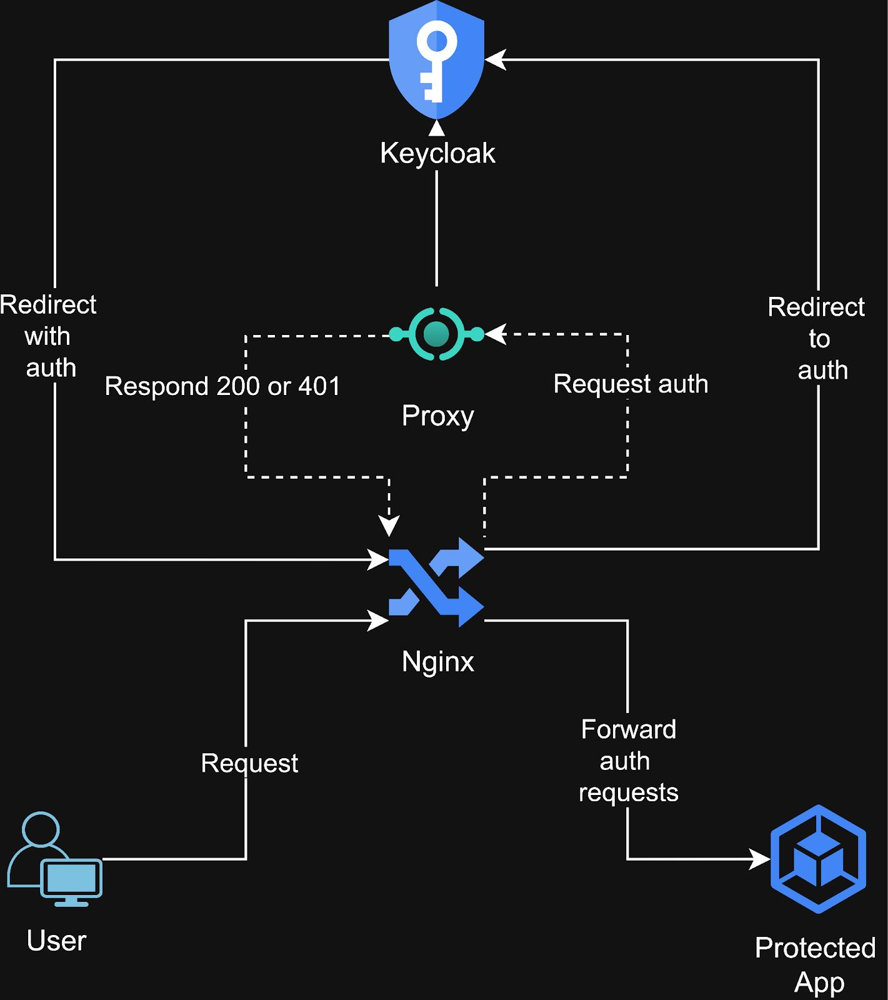

Conception et validation d'une architecture d'authentification centralisée
J'ai conçu, déployé et validé de bout en bout une infrastructure applicative sécurisée reposant sur le modèle Zero Trust — le standard aujourd'hui recommandé par les grandes entreprises et les administrations pour protéger leurs systèmes d'information. Ce projet reproduit, à l'échelle d'un laboratoire personnel, l'architecture que l'on retrouve derrière la plupart des applications web modernes exposées à Internet : un point d'entrée unique, un service d'identité centralisé, et une application qui ne fait confiance à personne par défaut.
La majorité des incidents de sécurité en entreprise ne viennent pas d'un pare-feu mal configuré, mais d'une mauvaise gestion de la confiance : une application qui suppose que "si la requête vient du réseau interne, elle est légitime", ou qui gère elle-même ses mots de passe sans jamais les centraliser ni les protéger correctement.
Ce projet répond à une question très concrète que se pose toute organisation qui expose des services numériques :
« Comment garantir qu'une application ne fait jamais confiance à un utilisateur ou à une machine sans preuve d'identité vérifiable — même si cette machine est déjà "à l'intérieur" du réseau ? »
C'est exactement le changement de paradigme qu'ont opéré ces dernières années des entreprises comme Google (avec son initiative interne BeyondCorp), et que la plupart des standards de cybersécurité (ANSSI, NIST) recommandent désormais aux organisations, quel que soit leur secteur.
J'ai mis en place un environnement de trois systèmes interconnectés, chacun avec une responsabilité unique et cloisonnée — une approche appelée séparation des responsabilités, un principe fondamental en architecture logicielle sécurisée :

Figure 1 : Modélisation des flux entre le Reverse Proxy (Nginx), le serveur d'Identité (Keycloak) et l'Application (Flask).
| Composant | Rôle | Analogie métier |
|---|---|---|
| Point d'entrée unique | Seul élément visible depuis l'extérieur ; filtre et redirige tout le trafic | L'accueil sécurisé d'un bâtiment : personne n'entre sans passer par lui |
| Service d'identité centralisé | Vérifie qui est l'utilisateur, gère les mots de passe, délivre une preuve d'identité numérique | Le service des ressources humaines qui valide un badge d'accès |
| Application métier | Ne fait confiance à aucune requête sans vérifier elle-même la preuve d'identité fournie | Le collaborateur qui contrôle systématiquement le badge, même d'un collègue qu'il croise tous les jours |
Ce découpage n'est pas un exercice académique : c'est exactement le schéma que l'on retrouve derrière des applications bancaires, des portails hospitaliers ou des plateformes SaaS d'entreprise.
Dans une architecture classique, chaque application gère ses propres identifiants. Si l'une d'elles est compromise, ce sont potentiellement des milliers de mots de passe qui fuitent — d'autant plus dommageable que les utilisateurs réutilisent souvent les mêmes mots de passe d'un service à l'autre. En centralisant la gestion des identités sur un seul système spécialisé, audité et dédié à cette tâche, une organisation réduit mécaniquement sa surface d'attaque et simplifie sa conformité réglementaire (RGPD, ISO 27001).
Quand un salarié quitte l'entreprise, il suffit de désactiver un seul compte pour lui couper l'accès à tous les services connectés — au lieu de devoir intervenir manuellement dans chaque application, avec le risque d'oubli que cela comporte.
L'un des points techniques les plus subtils du projet — et sans doute le plus révélateur d'une compréhension approfondie du sujet — est que l'application métier n'a jamais besoin d'interroger le service d'identité en temps réel pour vérifier un utilisateur. Elle vérifie elle-même, mathématiquement, une signature numérique. Concrètement, cela veut dire qu'un service d'identité qui tombe en panne quelques minutes ne bloque pas l'ensemble des applications de l'entreprise — un enjeu de continuité de service directement lié au chiffre d'affaires pour toute organisation en ligne.
J'ai spécifiquement testé un scénario d'intrusion : que se passe-t-il si un attaquant contourne le point d'entrée et s'adresse directement à l'application métier ? Résultat : l'accès reste bloqué, car la vérification d'identité n'est jamais déléguée à la seule protection réseau. C'est la différence entre une sécurité "en carapace" (dure à l'extérieur, molle à l'intérieur) et une sécurité "en profondeur", où chaque composant se protège lui-même.
| Domaine | Ce que le projet illustre |
|---|---|
| Architecture sécurité | Conception d'une infrastructure à plusieurs niveaux de confiance, application concrète du principe Zero Trust. |
| Gestion des identités (IAM) | Mise en œuvre d'un fournisseur d'identité centralisé, standards OAuth2 / OpenID Connect utilisés par la quasi-totalité des grandes plateformes du marché. |
| Résolution de problèmes | Diagnostic et correction de plusieurs blocages réels rencontrés en cours de projet (droits d'accès système, configuration d'authentification, dépendances logicielles manquantes). |
| Rigueur méthodologique | Démarche reproductible et documentée, cahier de tests et validation systématique de chaque scénario (accès autorisé, accès refusé, tentative de contournement). |
| Vision systémique | Capacité à raisonner sur l'interaction entre plusieurs systèmes plutôt que sur un seul composant isolé — une compétence clé pour évoluer vers des postes d'architecte ou de lead technique. |
Chaque scénario a été testé et documenté avant d'être considéré comme validé :
Ce projet constitue le socle (« Niveau 1 ») d'une démarche que je poursuis en profondeur :
Ce laboratoire n'est pas un exercice de suivi de tutoriel : c'est une reconstitution fidèle des choix d'architecture que font aujourd'hui les équipes sécurité et infrastructure des entreprises exposées au numérique. Il démontre ma capacité à comprendre un enjeu métier de sécurité, à le traduire en architecture technique cohérente, et à valider rigoureusement que cette architecture tient ses promesses face à des scénarios d'usage réels — y compris malveillants.